1. Состав исполнителей:
Состав исполнителей на железнодорожных участках:
| Исполнители |
Разряд квалификации не менее |
Количество исполнителей |
| Инженер сервисной организации |
- |
1 |
| Электромеханик центрального поста |
- |
1 |
2. Условия производства работ
2.1. Сканирование поверхности жестких дисков, сканирование файловой системы жестких дисков с исправлением ошибок, дефрагментация дисков производится только на находящемся в резерве автоматизированном рабочем месте поездного диспетчера (далее – АРМ ДНЦ).
ВНИМАНИЕ: При отсутствии резервирования АРМ ДНЦ, работа выполняется в технологическое «окно» с согласия поездного диспетчера.
2.2. Работа производится электротехническим персоналом, имеющим группу по электробезопасности при работе в электроустановках до 1000 В не ниже III, перед началом работ проинструктированным в установленном порядке.
2.3. К работе допускается обслуживающий персонал, прошедший специальную подготовку и выдержавший испытания в знаниях условий эксплуатации системы в соответствии с процедурами, принятыми в ОАО «РЖД».
2.4. Допуск на объект, оформление записей в журналах, контроль качества работ, выполняемых подрядными организациями, участие в приемке выполненных работ осуществляется эксплуатационным персоналом в соответствии с требованиями Инструкции по техническому обслуживанию и ремонту устройств и систем сигнализации, централизации и блокировки, утвержденной распоряжением ОАО «РЖД» от 30 декабря 2015 г. № 3168р.
3. Средства защиты, измерений, технологического оснащения; монтажные приспособления, испытательное оборудование, инструменты, техническая документация
Диспетчерская централизация ДЦ «Юг». Руководство по эксплуатации 36818650.39003.001-01 РЭ;
Диспетчерская централизация ДЦ «Юг». Технология обслуживания. Технологические карты по техническому обслуживанию ДЦ «Юг» на базе КП «Круг» 36818650.39003.001-01 ТО.
4. Подготовительные мероприятия
4.1. Подготовить техническую документацию, указанную в разделе 3.
5. Обеспечение безопасности движения поездов
5.1. Сканирование поверхности жестких дисков, сканирование файловой системы жестких дисков с исправлением ошибок, дефрагментация дисков производится в технологическое «окно» с согласия поездного диспетчера (далее – ДНЦ).
5.2. Работа выполняется без оформления записи в Журнале осмотра путей, стрелочных переводов, устройств сигнализации, централизации и блокировки, связи и контактной сети формы ДУ-46 (далее – Журнал осмотра).
5.3. При выполнении работы обеспечить безопасность движения в соответствии с требованиями Инструкции по обеспечению безопасности движения поездов при технической эксплуатации устройств и систем СЦБ ЦШ-530-11, утвержденной распоряжением ОАО «РЖД» от 20 сентября 2011 г. № 2055р.
Примечание. Здесь и далее по тексту целесообразно проверить действие ссылочных документов. Если ссылочный документ заменен (изменен), то при пользовании данной картой технологического процесса следует руководствоваться заменяющим (измененным) документом. Если ссылочный документ отменен без замены, то применяется та часть текста, где не затрагивается ссылка на этот документ
6. Обеспечение требований охраны труда
6.1. При выполнении технологических операций следует руководствоваться требованиями «Инструкции по охране труда для электромеханика и электромонтера устройств сигнализации, централизации и блокировки в ОАО «РЖД» от 03 ноября 2015 № 2616р и «Правилами по охране труда при техническом обслуживании и ремонте устройств сигнализации, централизации и блокировки в ОАО «РЖД» (ПОТ РЖД-4100612-ЦШ-215-2021), утверждёнными распоряжением ОАО «РЖД» от 19 февраля 2021 г. №346/р.
ВНИМАНИЕ. Место работ должно иметь достаточное для их производства освещение. При необходимости следует применять переносные осветительные приборы.
7. Технология выполнения работ
7.1. . Сканирование поверхности жестких дисков, сканирование файловой системы жестких дисков с исправлением ошибок.
Сканирование файловой системы жестких дисков выполняется средствами операционной системы с целью обнаружения ошибок файлов и файловой структуры жестких дисков, их исправления и восстановления.
7.1.1. На АРМ ДНЦ, находящемся в резерве, в программе «Проводник» активировать диалог «Свойства» (Рисунок 1) нужного жесткого диска, перейти на вкладку «Сервис» и нажать «Выполнить проверку» (Рисунок 2).
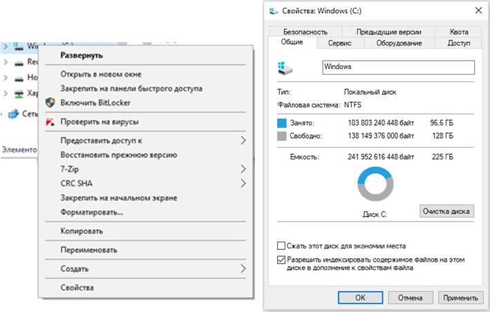
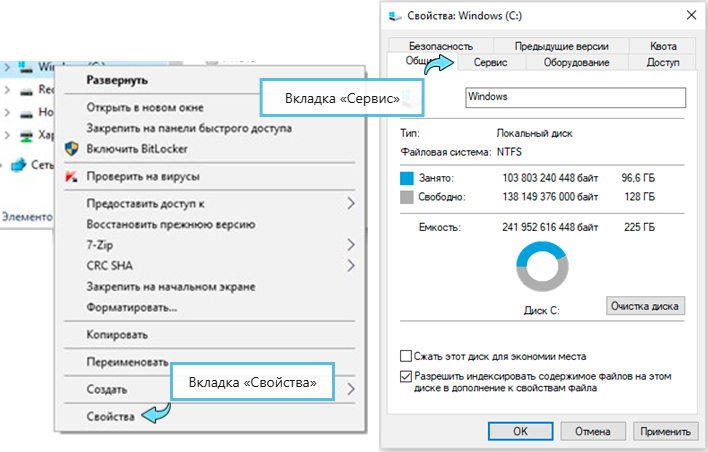
Рисунок 1. Выбор жесткого диска.

Вкладка «Свойства»
Вкладка «Сервис»
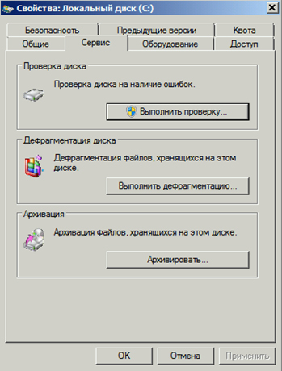
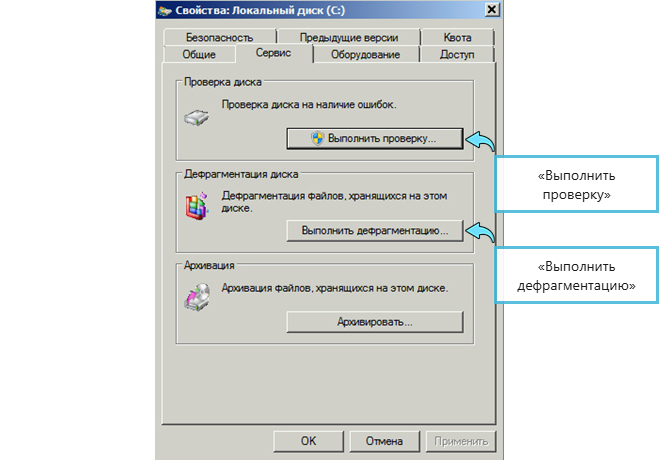
Рисунок 2. Выбор диска.

«Выполнить проверку»
«Выполнить дефрагментацию»
7.1.2. В открывшемся окне установить флажок только на «Автоматически исправлять системные ошибки» (Рисунок 3).
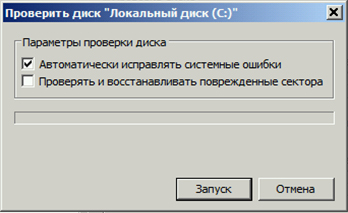
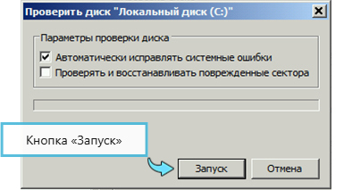
Рисунок 3. Установка параметров проверки диска.
Кнопка «Запуск»
ВНИМАНИЕ: Флажок «Проверять и восстанавливать поврежденные сектора» устанавливается в том случае, если необходимо проверить всю поверхность жесткого диска.
7.1.3. Выполнить проверку системного диска «C:», при этом система выдаст предупреждение о невозможности выполнения проверки во время работы с предложением назначить выполнение при очередном перезапуске (Рисунок 4).

Рисунок 4. Предупреждение.
ВНИМАНИЕ: Если требуется выполнить проверку не системного диска, она может производиться в процессе функционирования системы и начнется сразу после нажатия кнопки «Запуск» (Рисунок 3).
7.1.4. Подтвердить назначение проверки, в этом случае она будет выполнена при очередном перезапуске перед загрузкой операционной системы.
ПРЕДУПРЕЖДЕНИЕ: Проверка системного диска может потребовать значительного времени, которое зависит от объема диска и его состояния. При наличии значительного количества ошибок на диске большой емкости проверка может занять более одного часа.
7.1.5. Оформить запись в Журнале осмотра.
Пример записи:
В технологическое «окно» будет произведено переключение с основного АРМ ДНЦ на резервный и управление с резервного АРМ ДНЦ.
ШНД
ДНЦ
7.1.6. Провести переключение активности с основного АРМ ДНЦ на резервный согласно ТНК ЦШ 0197-2016.
7.1.7. Выполнить сканирование поверхности жестких дисков на основном АРМ ДНЦ в соответствии с пунктами 7.1.1-7.1.4.
7.2. Дефрагментация дисков.
Дефрагментация жестких дисков выполняется средствами операционной системы с целью упорядочить хранение файлов данных на жестком диске и оптимизировать скорость доступа к данным.
ПРИМЕЧАНИЕ: Дефрагментация не выполняется для дисков типа SSD.
7.2.1. На АРМ ДНЦ, находящемся в резерве, в программе «Проводник» активировать диалог «Свойства» (Рисунок 1) нужного жесткого диска, перейти на вкладку «Сервис» и нажать «Выполнить дефрагментацию» (Рисунок 2).
ПРИМЕЧАНИЕ: В операционной системе Windows XP необходимо сначала выполнить анализ диска (кнопка «Анализ»), затем нажать кнопку «Дефрагментация» (Рисунок 5).
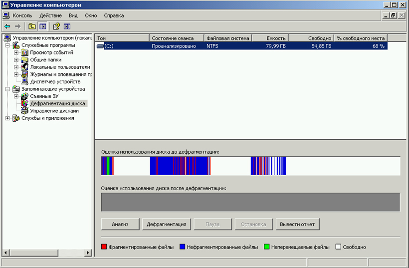
Рисунок 5. Выполнение дефрагментации в Windows XP.
ПРИМЕЧАНИЕ: В операционной системе Windows 7 и Windows 8 дефрагментация разделов жесткого диска выполняется автоматически в фоновом режиме. В ручном режиме анализ диска, запуск дефрагментации, а также настройка ее расписания выполняются в одном окне (Рисунок 6).
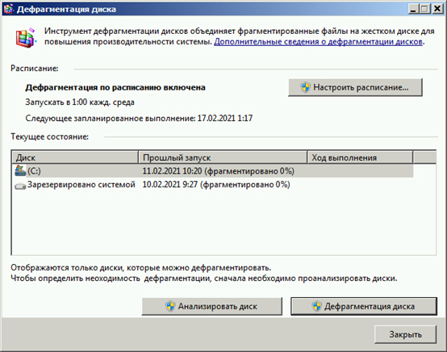
Рисунок 6. Выполнение дефрагментации в Windows 7.
ПРИМЕЧАНИЕ: В операционной системе Windows 10 вкладка «Сервис» свойств диска изменена, необходимо использовать кнопку «Оптимизировать» (Рисунок 7). При нажатии кнопки «Оптимизировать» вкладки «Сервис» свойств диска открывается окно (Рисунок 8), в котором необходимо выбрать нужный диск из списка доступных дисков и выполнить дефрагментацию нажатием кнопки «Оптимизировать» (Рисунок 8).
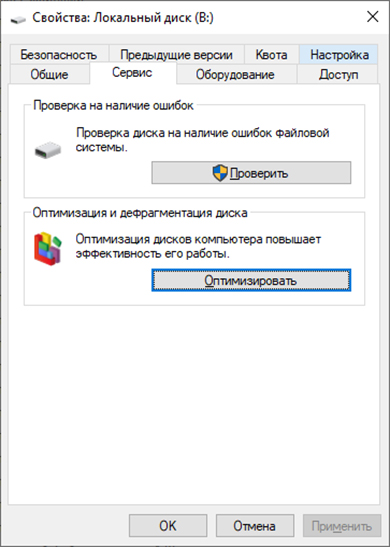
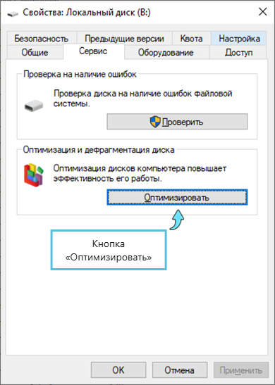
Рисунок 7. Вкладка «Сервис» в Windows 10.
Кнопка «Оптимизировать»
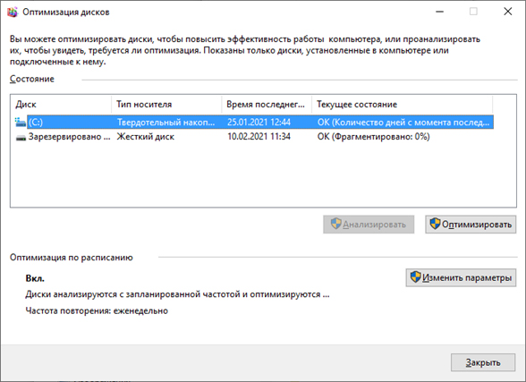
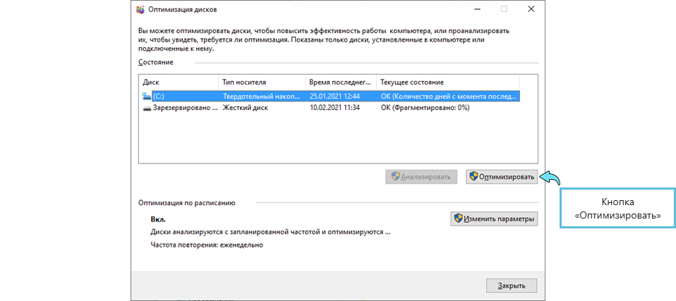
Рисунок 8. Выполнение дефрагментации в Windows 10.
Кнопка «Оптимизировать»
7.2.2. Оформить запись в Журнале осмотра.
Пример записи:
Технологическое «окно» будет произведено переключение с основного АРМ ДНЦ на резервный и управление с резервного АРМ ДНЦ.
ШНД
ДНЦ
7.2.3. Провести переключение активности с основного АРМ ДНЦ на резервный согласно ТНК ЦШ 0197-2016.
7.2.4. Выполнить дефрагментацию дисков на основном АРМ ДНЦ в соответствии с пунктом 7.2.1.
7.3. Заполнить форму отчетных документов, представленную в таблице 1.
Таблица 1.
| Дата |
Серийный или
инвертарный номер
системного блока |
Результат сканирования |
Выполнение
дефрагментации |
Фамилия И.О
исполнителя |
Подпись |
файловой
системы |
поверхности
жёсткого диска |
| ... |
... |
... |
... |
... |
... |
... |
| ... |
... |
... |
... |
... |
... |
... |
| ... |
... |
... |
... |
... |
... |
... |
7.4. В случае невозможности провести сканирование поверхности жестких дисков, сканирование файловой системы жестких дисков с исправлением ошибок, дефрагментацию дисков передать информацию диспетчеру центра диагностики и мониторинга для организации оповещения разработчика системы (центра сервисного обслуживания) для принятия мер.
8. Заключительные мероприятия, оформление результатов работы
После окончания сканирования поверхности жестких дисков, сканирования файловой системы жестких дисков с исправлением ошибок, дефрагментации дисков оповестить ДНЦ об окончании работы, сделать запись в журнале ШУ-2 о проведенной работе и внести результаты выполнения работы в систему ЕК АСУИ в соответствии с требованиями, изложенными в разделе 4 «Порядка планирования, учета и контроля выполнения работ в хозяйстве автоматики и телемеханики», утверждённого распоряжением ОАО «РЖД» от 13 января 2020 г. №20/р.
Результаты работы по сопровождению программного обеспечения специализированная организация оформляет в журнале учета выполненных работ по техническому обслуживанию и ремонту устройств и систем ЖАТ по форме, представленной в регламенте взаимодействия между участниками процесса технического обслуживания и ремонта систем и устройств железнодорожной автоматики и телемеханики ОАО «РЖД», осуществляемых специализированными организациями, утвержденном распоряжением ОАО «РЖД» от 30 декабря 2017 г. № 2827р.
Начальник отдела ПКБ И
Конструктор 1 категории ПКБ И
Е.Н. Иванов
В.В. Харламов